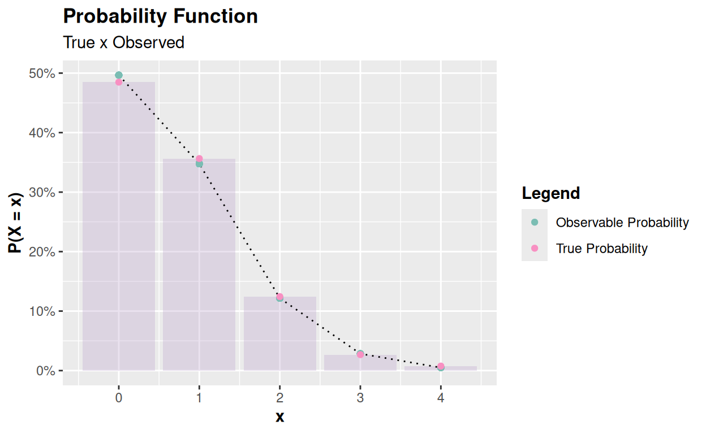
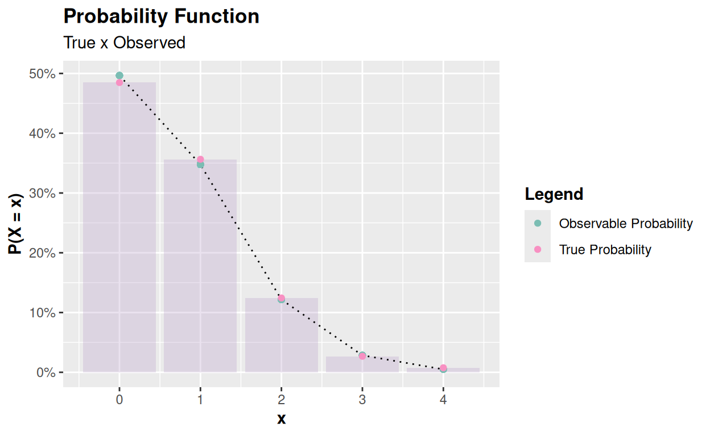
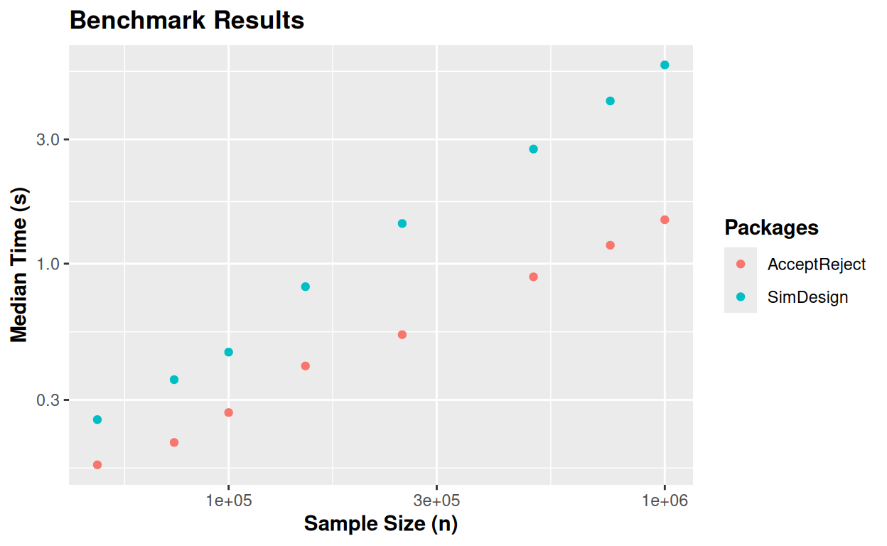
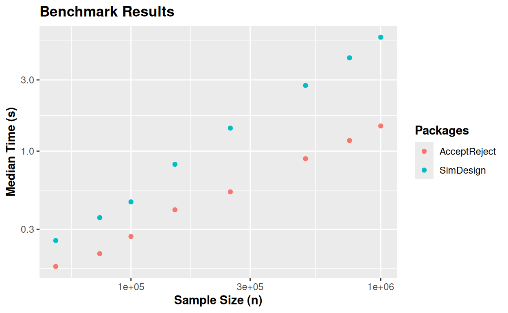

1 Introduction
The class of Monte Carlo methods and algorithms is a powerful and versatile computational technique that has been widely used in a variety of fields, from physics, statistics, and economics to biology and areas such as social sciences. Through the modeling of complex systems and the performance of stochastic experiments, Monte Carlo simulation allows researchers to explore scenarios that would be impractical or impossible to investigate through traditional experimental methods.
A critical component of any Monte Carlo simulation is the ability to generate pseudo-random observations of a sequence of random variables that follow a given probability distribution. In many cases, these variables can be discrete or continuous, and the ability to generate observations from a sequence of random variables efficiently and accurately is fundamental in simulation studies.
There are several techniques to generate observations from a sequence of random variables, many of which depend on the availability of a closed-form quantile function of the distribution of interest or knowledge of some transformation involving random variables that we know how to generate observations from. Depending on the distribution one wishes to generate observations from, the inverse of the cumulative distribution function (quantile function) does not have a closed form, and in many cases, we do not know transformations involving random variables that we know how to generate observations from, and thus, we can generate observations from the random variable of interest. In this sense, computational methods, such as the Acceptance-Rejection Method (ARM), proposed by John von Neumann in 1951, see von Neumann (1951), are a viable alternative for generating observations in the univariate context. For example, in the current scenario, where various distributions and probability distribution generators are being proposed, with these generators being functions that, from the knowledge of a probability distribution, can generate a new probability distribution, the ARM is widely used because it proves to be useful for generating pseudo-random observations of random variables of a discrete or continuous nature.
In the case of univariate distributions, the ARM is an effective technique for generating pseudo-random observations of random variables and has several advantages over other methods such as the Metropolis-Hastings (MH) algorithm, for example. The ARM, often also called the Rejection Method, is an algorithm that can be easily parallelized. Moreover, this method is not sensitive to initial parameters, as in the case of the MH algorithm, and leads to observations that are not dependent. Additionally, in the ARM, it is not necessary to perform a “burn-in,” and it is not required to wait for the algorithm to reach a stationary level, as in the case of MH. The ARM, when well implemented, can be a great alternative for generating observations of random variables in the univariate case and can be considered in many situations before opting for computationally more expensive methods such as MH or Gibbs sampling.
The AcceptReject package (Marinho and Tomazella 2024) for the R programming language, also available and maintained at https://github.com/prdm0/AcceptReject/, was specifically developed to handle these challenges. It offers a simple and efficient solution for generating pseudo-random observations of discrete or continuous random variables in univariate distributions, using the ARM to generate pseudo-random observations of a sequence of random variables whose probability mass function (discrete case) or probability density function (continuous case) are complex or poorly explored. The library has detailed documentation and vignettes to assist user understanding. On the package’s website, you can find usage examples and the complete documentation of the package https://prdm0.github.io/AcceptReject/, in addition to the vignettes.
The design of the AcceptReject package is simple and intuitive, allowing users to generate observations of random variables quickly and efficiently, and in a parallelized manner, using multicore parallelism on Unix-based operating systems. The package also performs excellently on Windows, as much of the library’s performance comes from optimizing the probability of accepting observations of an auxiliary random variable as observations of the random variable of interest. Additionally, some points have been further optimized using the Rcpp (Eddelbuettel et al. 2024) and RcppArmadillo (Eddelbuettel and Sanderson 2014) libraries.
The library, through the accept_reject() function https://prdm0.github.io/AcceptReject/reference/accept_reject.html, only requires the user to provide the probability mass function (for discrete variables) or the probability density function (for continuous variables) they wish to generate observations from, in addition to the list of arguments of the distribution of interest. Other arguments can be passed and are optional, such as the normalization constant value, which by default is obtained automatically, arguments involving the optimization method, a probability mass function (discrete case), or probability density function (continuous case), if the user wishes to specify a base distribution, which can be useful in cases of more complex distributions.
With the use of simple functions such as inspect() and plot() the user can inspect the base probability density function and the quality of generating pseudo-random observations quickly, without spending much time on plotting, making the analysis process faster, which is as important as computational efficiency.
In this article, we will explore the AcceptReject package in detail. We will discuss how it can be used, the functionalities it offers, and the benefits it brings to users. Through examples and discussions, we hope to demonstrate the value of the AcceptReject package as a useful addition to the toolbox of any researcher or professional working with Monte Carlo simulations.
Initially, in Section 2, the article will discuss the ARM and how it can be used to generate pseudo-random observations of random variables. In Section 3, the dependencies used in the current version of the package will be listed and referenced, and some computational details considered in the examples and simulations will be presented. In Section 4, it shows how to install and load the package from CRAN and GitHub. In Section 5, each of the functions exported by the AcceptReject package is discussed, and some examples are presented to help expose the details. In Section 6, more examples of the package’s use are presented, showing the package for generating pseudo-random observations of discrete and continuous random variables, and Section 7 is dedicated to presenting a more complex problem, in a more realistic scenario, where a probability distribution generator, proposed by Nadarajah et al. (2014), is used to generate the Modified Beta Weibull (MBW) probability density function, where we do not know its quantile function, and thus, the ARM applied using the AcceptReject package can solve the problem of generating observations of a random variable with MBW distribution. In Section 8, benchmarks are presented in different scenarios to demonstrate the computational efficiency of the package. In Section 9, similar works are compared with the AcceptReject package, and layout and performance advantages are presented. Finally, in Section 10, a conclusion is presented with suggestions for future improvements to enhance the package.
2 Acceptance-Rejection Method - ARM
The acceptance-rejection method - ARM, proposed by (von Neumann 1951) and often simply called the rejection method, is a useful method for generating pseudo-random observations of discrete or continuous random variables, mainly in the context of univariate distributions, to which the AcceptReject package is intended. The method is based on the idea that, if we can find a probability distribution \(G_Y\) of a random variable \(Y\) that envelops (bounds) the probability distribution \(F_X\) of the random variable \(X\) of interest, and \(G\) and \(F\) share the same support, then we can generate observations of \(X\). In addition to sharing the same support and having \(G_Y\) bounding \(f_X\), it is necessary that we can generate observations of \(Y\), that is, in practice, we will have a function that generates observations of this random variable. Through the generator of \(Y\), we can then generate observations of the random variable of interest \(X\), accepting or rejecting the observations generated by the observation generator of \(Y\), based on the probability density functions or probability mass functions of \(X\) and \(Y\), in the continuous or discrete case, respectively.
Consider a hypothetical example, with \(x,y \in [0, 5]\), where \(x\) and \(y\) are observations of the random variables \(X\) (variable of interest) and \(Y\) (variable from which we can generate observations), respectively, and assuming we do not know how to generate observations of \(X\), for example, from the Weibull distribution (in practice, this is not true), where \(X \sim Weibull(\alpha = 2, \beta = 1)\), with \(c \times Y \sim \mathcal{U}(a = 0, b = 5)\), where \(c \geq 1\). In this example, given a density function used as a basis (density function of \(Y\)), the initial idea of ARM is to make the base density, denoted by \(g_Y\), envelop (bound) the probability density function of interest, that is, envelop \(f_X\). The Figure 1 (a) and Figure 1 (b) illustrate the procedure for choosing the constant \(c\) for ARM, with \(c = 1\) and \(c = 4.3\), respectively.

Figure 1: Inspection of the probability density function of the random variable of interest with the base probability density function, with \(c = 1\) (default) (a) and \(c = 4.3\) (b).
Notice that the support of the base probability density function \(g_Y\) must be the same as \(f_X\), since the observations generated from \(Y\) are accepted or rejected as observations of \(X\) (the random variable of interest). The interval \(x,y \in [0, 5]\) was chosen because the density near the upper limit of this interval quickly drops to values close to zero, eliminating the need to consider a broader interval, although it could be considered. It is possible to see, with the help of Figure 1 (a), that \(c = 1\) is not a good choice, as much of the density \(f_X\) would be left out and not captured by \(g_Y\), i.e., it would not be bounded by \(g_Y\). Therefore, increasing the value of \(c\) in this hypothetical example is necessary for good generation of observations of \(X\). Note in Figure 1 (a) that the intersection area is approximately 0.39, and in the optimal case, we should have \(c \geq 1\), such that the intersection area between \(f_X\) and \(g_Y\) is 1, and \(c\) is the smallest possible value. A small value of \(c\) will always imply a higher probability of accepting observations of \(Y\) as observations of \(X\). Thus, the choice of \(c\) will be a trade-off between computational efficiency (higher acceptance probability) and ensuring that the base density bounds the density of interest.
Note now that for \(c = 4.3\), in Figure 1 (b), the intersection area is equal to \(1\) and \(g_Y\) does not excessively bound \(f_X\), thus becoming a convenient value. In this way, \(c = 4.3\) could be an appropriate value for the given example. However, a larger value of \(c\) could be used, which would decrease the computational efficiency of ARM, for reasons that will be presented later.
What makes the method interesting is that the iterations of ARM are not mathematically dependent, making it easily parallelizable. Although it can be extended to the bivariate or multivariate case, the method is most commonly used to generate univariate observations. Moreover, if the distribution of the random variable from which pseudo-random observations are to be generated is indexed by many parameters, ARM can be applied without major impacts, as the number of parameters usually does not affect the efficiency of the method.
Considering the discrete case, suppose \(X\) and \(Y\) are random variables with probability density function (pdf) or probability function (pf) \(f\) and \(g\), respectively. Furthermore, suppose there exists a constant \(c\) such that
\[\frac{f(x)}{g(y)} \leq c,\] for every value of \(x\), with \(f(x) > 0\). To use the acceptance-rejection method to generate observations of the random variable \(X\), using the algorithm below, first find a random variable \(Y\) with pdf or pf \(g\), such that it satisfies the above condition.
It is important that the chosen random variable \(Y\) is such that you can easily generate its observations. This is because the acceptance-rejection method is computationally more intensive than more direct methods such as the transformation method or the inversion method, which only requires the generation of pseudo-random numbers with a uniform distribution.
Algorithm of the Acceptance-Rejection Method:
1 - Generate an observation \(y\) from a random variable \(Y\) with pdf/pf \(g\);
2 - Generate an observation \(u\) from a random variable \(U\sim \mathcal{U} (0, 1)\);
3 - If \(u < \frac{f(y)}{cg(y)}\) accept \(x = y\); otherwise, reject \(y\) as an observation of the random variable \(X\) and go back to step 1.
Proof: Consider the discrete case, that is, \(X\) and \(Y\) are random variables with pfs \(f\) and \(g\), respectively. By step 3 of the algorithm above, we have \(\{accept\} = \{x = y\} = u < \frac{f(y)}{cg(y)}\). That is,
\[P(accept | Y = y) = \frac{P(accept \cap \{Y = y\})}{g(y)} = \frac{P(U \leq f(y)/cg(y)) \times g(y)}{g(y)} = \frac{f(y)}{cg(y)}.\] Hence, by the Law of Total Probability, we have:
\[P(accept) = \sum_y P(accept|Y=y)\times P(Y=y) = \sum_y \frac{f(y)}{cg(y)}\times g(y) = \frac{1}{c}.\] Therefore, by the acceptance-rejection method, we accept the occurrence of \(Y\) as an occurrence of \(X\) with probability \(1/c\). Moreover, by Bayes’ Theorem, we have
\[P(Y = y | accept) = \frac{P(accept|Y = y)\times g(y)}{P(accept)} = \frac{[f(y)/cg(y)] \times g(y)}{1/c} = f(y).\] The result above shows that accepting \(x = y\) by the algorithm’s procedure is equivalent to accepting a value from \(X\) that has pf \(f\). For the continuous case, the proof is similar.
Notice that to reduce the computational cost of the method, we should choose \(c\) in such a way that we can maximize \(P(accept)\). Therefore, choosing an excessively large value of the constant \(c\) will reduce the probability of accepting an observation from \(Y\) as an observation of the random variable \(X\).
Computationally, it is convenient to consider \(Y\) as a random variable with a uniform distribution on the support of \(f\), since generating observations from a uniform distribution is straightforward on any computer. For the discrete case, considering \(Y\) with a discrete uniform distribution might be a good alternative.
Choosing an excessively large value for \(c\) will increase the chances of generating good observations of \(X\), as an excessive value for \(c\), in many situations, will allow the base distribution \(g\) to bound \(f\). The problem, however, will be the computational cost. Thus, the problem of choosing an appropriate value for \(c\) is an optimization problem, where selecting an appropriate value for \(c\) is a task that can be automated. Additionally, it is important to note that choosing an excessively large value for the constant \(c\), although it will lead to excessively slow code, is not as significant a problem as choosing an excessively small value for \(c\), which will lead to the generation of poor observations of \(X\). Since it is an optimization problem, it is possible to choose a convenient value for \(c\) that is neither too large nor too small, generating good observations for \(X\) with a very acceptable computational cost.
Therefore, the AcceptReject package aims to automate some tasks, including the optimization of the value of \(c\). Thus, it becomes clear that, given a probability density function (continuous case) or probability mass function (discrete case) \(g\), obtaining the smallest value of \(c\), such that \(c \geq 1\), combined with the possibility of code parallelism, are excellent ways to reduce the computational cost of ARM. This is, among other things, what the AcceptReject package does through its accept_reject() function and other available functions. In the following sections, we will discuss each of them in detail.
The first article describing the acceptance-rejection method is by von Neumann, titled “Various techniques used in connection with random digits” from 1951 (von Neumann 1951). Several common books in the field of stochastic simulations and Monte Carlo methods also detail the method, such as (Kroese et al. 2013), (Asmussen and Glynn 2007), (Kemp 2003), and (Gentle 2003).
3 Dependencies and Some Computational Details
The AcceptReject package (Marinho and Tomazella 2024) has several dependencies, which, in its most current version, can be observed in the DESCRIPTION file. In the current version on GitHub, version 0.1.2, the dependencies are assertthat (Wickham 2019), cli (Csárdi 2023), ggplot2 (Wickham 2016), glue (Hester and Bryan 2024), numDeriv (Gilbert and Varadhan 2019), purrr (Wickham and Henry 2023), Rcpp (Eddelbuettel et al. 2024), RcppArmadillo (Eddelbuettel and Sanderson 2014), rlang (Henry and Wickham 2024), scales (Wickham et al. 2023), and scattermore (Kulichova and Kratochvil 2023). Suggested libraries include knitr (Xie 2024), rmarkdown (Allaire et al. 2024), cowplot (Wilke 2024), and testthat (Wickham 2011).
In some examples that use the pipe operator |>, internal to the R language, it is necessary to have version 4.1.0 or higher of the language. However, this operator is not essential in the examples and can be easily omitted. The %>% operator from the magrittr package (Bache and Wickham 2022) can also be used, as the purrr package exports it. In fact, the |> operator has not been used internally in any function of the AcceptReject package, in the current version on GitHub, so that it can pass the automatic checks of GitHub Actions, whose tests also consider older versions of the R language.
Additionally, some examples load the parallel library, included in the R language since version 2.14 in 2011. In these examples, where ARM executions are performed in parallel, to ensure the reproducibility of the results, it is necessary to call the instructions RNGkind("L'Ecuyer-CMRG") and mc.reset.stream(). The RNGkind("L'Ecuyer-CMRG") instruction sets the L’Ecuyer-CMRG pseudo-random number generator (L’ecuyer 1999) and (L’ecuyer et al. 2002), which is a safe type of generator to use in parallel calculations, as it is a generator of multiple independent streams. The mc.reset.stream() function resets the stream of random numbers, ensuring that in a subsequent execution, the same sequence is generated again.
To take advantage of parallelism in ARM implemented in the AcceptReject package, which works on Unix-based operating systems, it is not necessary to load the parallel library, as the accept_reject() function of the AcceptReject package already makes use of parallelism. Loading the parallel library is only interesting if reproducibility is desired when execution is done in parallel using multiple processes, meaning when there is interest in executing the instructions RNGkind("L'Ecuyer-CMRG") and mc.reset.stream().
Simulations for benchmarking in parallel and non-parallel scenarios were performed on a computer with the Arch Linux operating system, an Intel Core(TM) i7-1260P processor with 16 threads, a maximum processor frequency of 4.70 GHz, and 16 GB of RAM. The version of the R language was 4.4.0, and the computational times considered are in logarithmic scale, base 10.
The AcceptReject package makes use of the S3 object-oriented system in R. Simple functions like plot(), qqplot(), and print() were exported to dispatch for the accept_reject class of the AcceptReject package, making it easier to use. Other object-oriented systems, such as the R6 system (Chang 2021), were not considered, as this would make the use of the package non-idiomatic, and some users might feel discouraged from using the library. Historical details about the programming paradigms of the R language can be found in (Chambers 2014).
4 Installation and loading the package
The AcceptReject package is available on CRAN and GitHub and can be installed using the following command:
# Install CRAN version
install.packages("remotes")
# Installing the development version from GitHub
# or install.packages("remotes")
remotes::install_github("prdm0/AcceptReject", force = TRUE)
# Load the package
library(AcceptReject)Figure 2: Logo of the package.
To access the latest updates of the AcceptReject package versions, check the changelog. For suggestions, questions, or to report issues and bugs, please open an issue. For a more general and quick overview of the package, read the README.md file or visit the package’s website at https://prdm0.github.io/AcceptReject/ to explore usage examples.
5 Function details and package usage
The AcceptReject package provides functions not only to generate observations using ARM in an optimized manner, but it also exports auxiliary functions that allow inspecting the base density function \(g_Y\), as well as the generation of pseudo-random observations after the creation, making the generation and inspection work efficient, easy, and intuitive. Efficient from a computational point of view by automatically optimizing the constant \(c\) and, therefore, maximizing the acceptance probability \(1/c\) of accepting observations of \(Y\) as observations of \(X\), in addition to allowing multicore parallelism in Unix-based operating systems. The computational efficiency combined with the ease of inspecting \(g_Y\) and the generated observations makes the package pleasant to use. The AcceptReject library provides the following functions:
inspect(): a useful function for inspecting the probability density function \(f_X\) with the base probability density function \(g_Y\), highlighting the intersection between the two functions and the value of the areas, allowing experimentation with different values of \(c\). This function does not perform any optimization; it simply facilitates the inspection of the proposed \(g_Y\) as a base probability density function, returning an object of the secondary classggand the primary classggplotfor graphs created with the ggplot2 library, as shown in Figure 1 (a) and Figure 1 (b);accept_reject(): implements ARM, optimizes the constant \(c\), and performs parallelism if specified by the user. The user can also specify details in the optimization process or define a value for \(c\) and thus assume this value of \(c\), omitting the optimization process. Additionally, it is possible to specify or not a base probability mass function or probability density function \(g_Y\), depending on whether \(X\) is a discrete or continuous random variable, respectively. If omitted, \(Y \sim \mathcal{U}\) discrete or continuous will be considered, depending on the nature of \(X\). Moreover, the user can specify, in the case of not specifying the value of the constant \(c\), an initial guess used in the optimization process of the constant \(c\). A good guess can be given by graphically inspecting the relationship between \(f_X\) and \(g_Y\). In most cases, theaccept_reject()function will provide good acceptances without specifying \(g_Y\) different from the default discrete or continuous uniform distribution and will make a good estimation of \(c\);print.accept_reject(): a function responsible for printing useful information on the screen about objects of theaccept_rejectclass returned by theaccept_reject()function, such as the number of generated observations, the estimated constant \(c\), and the estimated acceptance probability of accepting observations of \(Y\) as observations of \(X\);plot.accept_reject(): operates on objects of theaccept_rejectclass returned by theaccept_reject()function. Theplot.accept_reject()function returns an object of the secondary classggand the primary classggplotfrom the ggplot2 package, allowing easy graphical comparison of the probability density function or probability mass function \(f_X\) with the observed probability density function or mass function from the generated data;qqplot(): constructs a Quantile-Quantile plot (QQ-plot) to compare the distribution of data generated by ARM (observed distribution) with the distribution of the random variable \(X\) (theoretical distribution, denoted by \(f_X\)). In a very simple way, the QQ-plot is produced by passing an object of theaccept_rejectclass, returned by theaccept_reject()function, to theqqplot()function.
In the following subsections, more details about the functions exported by the AcceptReject package will be presented. Examples are provided to facilitate understanding. Additional details about the functions can be found in the function documentation, which can be accessed using help(package = "AcceptReject") or on the package’s website, hosted in the GitHub repository that versions the development of the library at https://prdm0.github.io/AcceptReject/.
5.1 Inspecting Density Functions
The inspect() function of the AcceptReject package is useful when we want to generate pseudo-random observations of a continuous random variable using ARM. It is possible to skip this inspection since the accept_reject() function already automatically considers the continuous uniform distribution as the base density and optimizes, based on this base distribution, the best value for the constant \(c\). Additionally, other base densities \(g_Y\) can be specified to the accept_reject() function, where the search for the constant \(c\) will be done automatically, optimizing the value of \(c\) and its relationship with \(f_X\) and \(g_Y\), given \(g_Y\).
To specify other base density functions \(g_Y\), it is prudent to perform a graphical inspection of the relationship between \(f_X\) and \(g_Y\) to get an idea of the reasonableness of the candidate base probability density function \(g_Y\). Thus, the inspect() function will automatically plot a graph with some useful information, as well as the functions \(f_X\) and \(g_Y\). The inspect() function will return an object with the secondary class gg and the primary class ggplot (a graph made with the ggplot2 library) highlighting the intersection area between \(f_X\) and \(g_Y\) and the value of this area for a given \(c\), specified in the c argument of the inspect() function.
Theoretically, you can use any function \(g_Y\) that has support equivalent to that of the function \(f_X\), finding the appropriate value of \(c\) that will make \(g_Y\) envelop \(f_X\), that is, so that the value of the intersection area integrates to 1. The inspect() function has the following form:
inspect(
f,
args_f,
f_base,
args_f_base,
xlim,
c = 1,
alpha = 0.4,
color_intersection = "#BB9FC9",
color_f = "#FE4F0E",
color_f_base = "#7BBDB3"
)where:
fis the probability density function \(f_X\) of the random variable \(X\) of interest;args_f: is a list of arguments that will be passed to the probability density function \(f_X\) and that specify the parameters of the density of \(X\);f_base: is the probability density function that will supposedly be used as the base density \(g_Y\);args_f_base: is a list of arguments that will be passed to the base probability density function \(g_Y\) and that specify the parameters of the density of \(Y\);xlim: is a vector of size two that specifies the support of the functions \(f_Y\) and \(g_Y\) (they must be equivalent);c: is the constant \(c\) that will be used to multiply the base probability density function \(g_Y\), so it envelops (bounds) \(f_X\). The default isc = 1;alpha: is the transparency of the intersection area (default isalpha = 0.4);color_intersection: is the color of the intersection area between \(f_X\) and \(g_Y\), where the default iscolor_intersection = #BB9FC9;color_f: is the color of the curve of the probability density function \(f_X\) (default iscolor_f = #FE4F0E);color_f_base: is the color of the curve of the base probability density function \(g_Y\), where the default iscolor_f_base = #7BBDB3.
The Figure 1 (a) and Figure 1 (b), presented at the beginning of this paper, were automatically created with the inspect() function. As an example, in addition to those available in the package documentation and vignettes, here is the code that generated the graph shown in Figure 1 (a):
5.2 Generating Observations with ARM
The most important function of the AcceptReject package is the accept_reject() function, as it is the function that implements ARM and all the optimizations to obtain a good generation of \(X\). The accept_reject() function has the following signature:
accept_reject(
n = 1L,
continuous = TRUE,
f = NULL,
args_f = NULL,
f_base = NULL,
random_base = NULL,
args_f_base = NULL,
xlim = NULL,
c = NULL,
parallel = FALSE,
cores = NULL,
warning = TRUE,
...
)where:
n: is the number of observations to be generated (defaultn = 1L);continuous: is a logical value that indicates whether the probability density function \(f_X\) is continuous (defaultcontinuous = TRUE) or discrete, ifcontinuous = FALSE;f: is the probability density function \(f_X\) of the random variable \(X\) of interest;args_f: is a list of arguments that will be passed to the probability density function \(f_X\) and that specify the parameters of the density of \(X\). No matter how many parameters there are inf, they should be passed as a list toargs_f;f_base: is the probability density function that will supposedly be used as the base density \(g_Y\). It is important to note that this argument is only useful in this package whencontinuous = TRUE, as for the discrete case the package already has quite satisfactory computational performance. Additionally, visualizing a probability mass function that boundsf_Xis more complicated than for the continuous case. In the discrete case, whencontinuous = FALSE,f_base = NULLwill be considered the discrete uniform distribution;random_base: is a function that generates observations from the base distribution \(Y\) (defaultrandom_base = NULL). Ifrandom_base = NULL, the base distribution \(Y\) will be considered uniform over the interval specified in thexlimargument;args_f_base: is a list of arguments that will be passed to the base probability density function \(g_Y\) and that specify the parameters of the density of \(Y\). No matter how many parameters there are inf_base, they should be passed as a list toargs_f_base;xlim: is a vector of size two that specifies the support of the functions \(f_Y\) and \(g_Y\). It is important to remember that the support of \(f_Y\) and \(g_Y\) must be equivalent and will be informed by a single vector of size two passed as an argument toxlim;c: is the constant \(c\) that will be used to multiply the base probability density function \(g_Y\), so it envelops (bounds) \(f_X\). The default isc = 1. Unless there is a very strong reason, consideringc = NULLas the default will be a good choice because theaccept_reject()function will attempt to find an optimal value for the constant \(c\);parallel: is a logical value that indicates whether the generation of observations will be done in parallel (defaultparallel = FALSE). Ifparallel = TRUE, the generation of observations will be done in parallel on Unix-based systems, using the total number of cores available on the system. Ifparallel = TRUEand the operating system is Windows, the code will run serially, and no error will be returned even ifparallel = TRUE;cores: is the number of cores that will be used for parallel observation generation. Ifparallel = TRUEandcores = NULL, the number of cores used will be the total number of cores available on the system. If the user wishes to use a smaller number of cores, they can define it in thecoresargument;warning: is a logical value that indicates whether warning messages will be printed during the execution of the function (defaultwarning = TRUE). If the user specifies a very small domain inxlim, theaccept_reject()function will issue a warning informing that the specified domain is too small and that the generation of observations may be compromised;...: additional arguments that the user might want to pass to theoptimizefunction used to optimize the value ofc.
In a simpler use case, where the user does not wish to specify the base density function \(g_Y\) passed as an argument to f_base, useful for generating observations of a sequence of continuous random variables (\(x_1, \cdots, x_n\)), the use of the accept_reject() function is quite straightforward. For example, to generate 100 observations of a random variable \(X\) with a probability density function \(f_X(x) = 2x\), \(0 \leq x \leq 1\), the user could do:
set.seed(0)
# Generate 100 observations from a random variable X with
# f_X(x) = 2x, 0 <= x <= 1.
x <- accept_reject(
n = 100L,
f = function(x) 2 * x,
args_f = list(),
xlim = c(0, 1),
warning = FALSE
)
print(x[1L:8L])[1] 0.8966972 0.3721239 0.5728534 0.8983897 0.9446753 0.6607978
[7] 0.6870228 0.7698414Note that in this case, if warning = TRUE (default), the accept_reject() function cannot know that xlim = c(0, 1) specifies the entire support of the probability density function \(f_X(x) = 2x\), \(0 \leq x \leq 1\), and that is why it issues a warning. Typically, one chooses a support that is passed to the xlim argument in which below the lower limit (first element of xlim) and above the upper limit (second element of the vector xlim), the probability mass (in the discrete case) or density (in the continuous case) is close to zero or not defined. In this case, we have deliberately set warning = FALSE.
5.3 Printing the Object with Generated Observations
The accept_reject() function returns an object of class accept_reject. An object of the accept_reject class is essentially an atomic vector with observations generated by ARM, carrying attributes and marked with a specific class from the AcceptReject package, i.e., marked with the accept_reject class. These attributes are useful for the package and carry information used by the plot.accept_reject() function.
Using the S3 object-oriented system in R, the print() function will dispatch for objects of the accept_reject() class, invoking the print.accept_reject() method from the AcceptReject package. For an object of the accept_reject class returned by the accept_reject() function, it is possible to pass methods that operate on atomic vectors, such as summary(), mean(), var(), among others. The print() function will print useful information about the accept_reject() class object, such as the number of observations generated, the value of c used, the acceptance probability, the first generated observations, and the considered xlim interval. The summary() function will work by returning some descriptive statistics about the generated observations, such as the mean, median, variance, standard deviation, minimum, maximum, first quartile, and third quartile.
# setting a seed for reproducibility
set.seed(0)
x <- accept_reject(
n = 2000L,
f = dbinom,
continuous = FALSE,
args_f = list(size = 5, prob = 0.5),
xlim = c(0, 10)
)
# Printing the first 10 (default) observations
print(x)# Printing the first 20 observations
print(x, n_min = 20L)# Summary
summary(x) V1
Min. :0.000
1st Qu.:2.000
Median :3.000
Mean :2.538
3rd Qu.:3.000
Max. :5.000 5.4 Plotting Data Generated by ARM
Often, when generating observations using ARM, we are interested in visualizing the generated observations and graphically comparing them with the probability mass function (discrete case) or probability density function (continuous case) to get an idea of the quality of the data generation. Constructing a graph with your favorite library for each generation can be time-consuming. The idea of the plot.accept_reject() method is to facilitate this task, allowing you to easily and quickly generate this type of graph. In fact, since the S3 object-oriented system is used, you only need to use the plot() function on an accept_reject class object.
The plot() function applied to an accept_reject class object will return an object with the secondary class gg and the primary class ggplot (returns a graph). The returned object is a graph constructed with the ggplot2 library and can be modified to your preferred ggplot2 standards, such as its theme. However, the plot function has some specific arguments that allow you to modify some elements. The general usage form is:
## S3 method for class 'accept_reject'
plot(
x,
color_observed_density = "#BB9FC9",
color_true_density = "#FE4F0E",
color_bar = "#BB9FC9",
color_observable_point = "#7BBDB3",
color_real_point = "#FE4F0E",
alpha = 0.3,
hist = TRUE,
...
)x: An object of theaccept_rejectclass;color_observed_density: observed density color (continuous case);color_true_density: theoretical density color (continuous case);color_bar: bar chart fill color (discrete case);color_observable_point: color of generated points (discrete case);color_real_point: color of the real points (discrete case);alpha: transparency of the bars (discrete case);hist: ifTRUE, a histogram will be plotted in the continuous case, comparing the theoretical density with the observed one. IfFALSE,ggplot2::geom_density()will be used instead of the histogram;...: additional arguments.
The following code demonstrates the use of the plot() function. In Figure 3 (a), an example of a graph is presented with the histogram replaced by the observed density, if this type of representation is more useful to the user. To do this, simply pass the argument hist = FALSE. To illustrate the use of the arguments, the parameters color_true_density, color_observed_density, and alpha were also changed. In Figure 3 (b), an example of generating a graph for the discrete case is presented. The simple use of the plot() function without passing arguments should be sufficient to meet the needs of most users.
library(AcceptReject)
# Generating and plotting the theoretical density with the
# observed density.
# setting a seed for reproducibility
set.seed(0)
# Continuous case
accept_reject(
n = 2000L,
continuous = TRUE,
f = dweibull,
args_f = list(shape = 2.1, scale = 2.2),
xlim = c(0, 10)
) |>
plot(
hist = FALSE,
color_true_density = "#2B8b99",
color_observed_density = "#F4DDB3",
alpha = 0.6
) # Changing some arguments in plot()
# Discrete case
accept_reject(
n = 1000L,
f = dbinom,
continuous = FALSE,
args_f = list(size = 5, prob = 0.5),
xlim = c(0, 10)
) |> plot()

Figure 3: Plotting the theoretical density function (a) and the probability mass function (b), with details of the respective parameters in the code.
6 Examples
Below are some examples of using the accept_reject() function to generate pseudo-random observations of discrete and continuous random variables. It should be noted that in the case of \(X\) being a discrete random variable, it is necessary to provide the argument continuous = FALSE, whereas in the case of \(X\) being continuous (the default), you must consider continuous = TRUE.
6.1 Generating discrete observations
As an example, let \(X \sim Poisson(\lambda = 0.7)\). We will generate \(n = 1000\) observations of \(X\) using the acceptance-rejection method, using the accept_reject() function. Note that it is necessary to provide the xlim argument. Try to set an upper limit value for which the probability of \(X\) assuming that value is zero or very close to zero. In this case, we choose xlim = c(0, 20), where dpois(x = 20, lambda = 0.7) is very close to zero (1.6286586^{-22}). Note Figure 4 (a) and Figure 4 (b), respectively, and note that in Figure 4 (b), there is a proximity of the observed probabilities to the theoretical probabilities, indicating that ARM is generating observations that approximate the true probability mass function as the sample size increases.
library(AcceptReject)
library(parallel)
library(cowplot) # install.packages("cowplot")
# Ensuring reproducibility in parallel computing
RNGkind("L'Ecuyer-CMRG")
set.seed(0)
mc.reset.stream()
# Simulation
simulation <- function(n, lambda = 0.7)
accept_reject(
n = n,
f = dpois,
continuous = FALSE, # discrete case
args_f = list(lambda = lambda),
xlim = c(0, 20),
parallel = TRUE # Parallelizing the code in Unix-based systems
)
# Generating observations
# n = 25 observations
system.time({x <- simulation(25L)}) user system elapsed
0.003 0.042 0.043 plot(x)
# n = 2500 observations
system.time({y <- simulation(2500L)}) user system elapsed
0.002 0.035 0.037 plot(y) 

Figure 4: Generating observations from a Poisson distribution using the acceptance-rejection method, with \(n = 25\) (a) and \(n = 2500\) (b), respectively.
Note that it is necessary to specify the nature of the random variable from which observations are desired to be generated. In the case of discrete variables, the argument continuous = FALSE must be passed. In Section 6, examples of how to generate continuous observations will be presented.
6.2 Generating continuous observations
Considering the default base function, which is the uniform distribution, where it is not necessary to specify it, the code below exemplifies the continuous case, where \(X \sim \mathcal{N}(\mu = 0, \sigma^2 = 1)\). Not specifying a base probability density function implies f_base = NULL, random_base = NULL, and args_base = NULL, which are the defaults for the accept_reject() function. If at least one of them is specified as NULL and, by mistake, another is specified, no error will occur. In this situation, the accept_reject() function will assume the base probability density function is the density function of a uniform distribution over xlim. Note also the use of the plot() function, which generates a graph with the theoretical density function and the histogram of the generated observations, allowing a quick visual check of the quality of the observations generated by ARM.
library(AcceptReject)
library(parallel)
# Ensuring reproducibility in parallel computing
RNGkind("L'Ecuyer-CMRG")
set.seed(0)
mc.reset.stream()
# Generating observations
accept_reject(
n = 50L,
f = dnorm,
continuous = TRUE,
args_f = list(mean = 0, sd = 1),
xlim = c(-4, 4),
parallel = TRUE
) |> plot()
accept_reject(
n = 500L,
f = dnorm,
continuous = TRUE,
args_f = list(mean = 0, sd = 1),
xlim = c(-4, 4),
parallel = TRUE
) |> plot()Figure 5: Generating observations from a continuous random variable with a Standard Normal distribution, with \(n = 50\) and \(n = 500\) observations, respectively.
7 A practical scenario for the use of the package
So far, the use of the package to generate distributions that are relatively simple and involve few parameters has been demonstrated. In this section, the idea is to demonstrate the use of the AcceptReject package in a practical situation where the use of ARM becomes necessary. Let’s consider the generator of Modified Beta Distributions, proposed by (Nadarajah et al. 2014). It is a family of probability distributions since it is possible to generate various probability density functions through the proposed density generator, whose general density function is defined by:
\[f_X(x) = \frac{\beta^a}{B(a,b)} \times \frac{g(x)G(x)^{a - 1}(1 - G(x))^{b - 1}}{[1 - (1 - \beta)G(x)]^{a + b}},\] with \(x \geq 0\) and \(\beta, a, b > 0\), where \(g(x)\) is a probability density function, \(G(x)\) is the cumulative distribution function of \(g(x)\), and \(B(a,b)\) is the beta function.
Notice that \(f_{X}(x)\) has a certain complexity since it depends on another probability density function \(g(x)\) and its cumulative distribution function \(G(x)\). Thus, \(f_X(x)\) has three parameters, \(c, a, b\), plus additional parameters inherited from \(g(x)\). Here, we will consider \(g(x)\) as the Weibull probability density function. Therefore, \(f_X(x)\) is the modified Weibull beta density function with five parameters. The implementation of the Modified Beta Distributions generator is presented below:
#|
library(numDeriv)
pdf <- function(x, G, ...){
numDeriv::grad(
func = \(x) G(x, ...),
x = x
)
}
# Modified Beta Distributions
# Link: https://link.springer.com/article/10.1007/s13571-013-0077-0
generator <- function(x, G, a, b, beta, ...){
g <- pdf(x = x, G = G, ...)
numerator <- beta^a * g * G(x, ...)^(a - 1) * (1 - G(x, ...))^(b - 1)
denominator <- beta(a, b) * (1 - (1 - beta) * G(x, ...))^(a + b)
numerator/denominator
}
# Probability density function - Modified Beta Weibull
pdf_mbw <- function(x, a, b, beta, shape, scale)
generator(
x = x,
G = pweibull,
a = a,
b = b,
beta = beta,
shape = shape,
scale = scale
)
# Checking the value of the integral
integrate(
f = \(x) pdf_mbw(x, 1, 1, 1, 1, 1),
lower = 0,
upper = Inf
)1 with absolute error < 5.7e-05Notice that the value pdf_mbw() integrates to 1, being a probability density function. Thus, the generator() function generates probability density functions based on another distribution \(G_X(x)\). In the case of the code above, the cumulative distribution function of the Weibull distribution is passed to the generator() function, but it could be any other.
In the following code, we will adopt the strategy of investigating (inspecting) a coherent proposal for a base density function to be passed as an argument to f_base in the accept_reject() function. The investigation could be skipped, in which case the accept_reject() function would assume the uniform distribution as the base.
We will consider the Weibull distribution since it is a particular case of the Modified Beta Weibull distribution. As we know how to generate observations from the Weibull distribution using the rweibull() function, the Weibull distribution is a viable candidate for the base density \(g_Y(y)\). Consider the true parameters a = 10.5, b = 4.2, beta = 5.9, shape = 1.5, and scale = 1.7. Thus, using the inspect() function, we can quickly inspect by doing:
library(AcceptReject)
# True parameters
a <- 10.5
b <- 4.2
beta <- 5.9
shape <- 1.5
scale <- 1.7
# c = 1 (default)
inspect(
f = pdf_mbw,
f_base = dweibull,
xlim = c(0, 4),
args_f = list(
a = a,
b = b,
beta = beta,
shape = shape,
scale = scale
),
args_f_base = list(shape = 2, scale = 1.2),
c = 1
)
# c = 2.2
inspect(
f = pdf_mbw,
f_base = dweibull,
xlim = c(0, 4),
args_f = list(
a = a,
b = b,
beta = beta,
shape = shape,
scale = scale
),
args_f_base = list(shape = 2, scale = 1.2),
c = 2.2
)
Figure 6: Inspecting the Weibull distribution with shape = 2, scale = 1.2, with the support xlim = c(0, 4) and c = 1 (default) (a) and c = 2.2 (b), respectively.
Notice that in Figure 6 (b), when \(c = 2.2\), the density \(g_Y\) bounds the density \(f_X\), which is the Modified Beta Weibull density of \(X\) from which we want to generate observations. Thus, the density \(g_Y\) used as a base is a viable candidate to be passed to the f_base argument of the accept_reject() function in the AcceptReject package. Also, note that the area between \(f_X\) and \(g_Y\) is smaller than it would be if \(g_Y\) were considered the uniform probability density function in the xlim support. In the following section, we will discuss the computational cost for different sample sizes, considering the base density \(g_Y\) as the Weibull density or the default (uniform density).
8 Benchmarking
The benchmarks considered in this section were performed on a computer with Arch Linux operating system, Intel Core(TM) i7-1260P processor with 16 threads, maximum frequency of 4.70 GHz, with computational times in logarithmic scale, base ten. More specifications were presented in Section 3.
Considering the case of the Modified Beta Weibull probability density function (a probability density function with five parameters) implemented in the pdf_mbw() function presented in Section 7, several benchmarks were conducted to evaluate the computational cost of the accept_reject() function for various sample sizes, considering both the parallelized and non-parallelized scenarios. Additionally, the benchmarks took into account the specification of \(g_Y\) considering the continuous uniform distribution in the xlim interval (default of the accept_reject() function) and the Weibull distribution with parameters shape = 2 and scale = 1.2, which bounds the probability density function of a random variable with Modified Beta Weibull with true parameters as in Figure 6. The sample sizes considered were \(n = 50\), \(250\), \(500\), \(1000\), \(5000\), \(10000\), \(15000\), \(25000\), \(50000\), \(100000\), \(150000\), \(250000\), \(500000\), and \(1000000\).
Figure 7: Benchmarking for different sample sizes, considering the Weibull distribution and the uniform distribution as the base density, with Weibull distribution and Uniform distribution (default), respectively.
Observing the Figures in 7, it is possible to see that the serial code, which is the default for the accept_reject() function, already performs excellently even with large samples, both when considering the specification of a base function \(g_Y\) or using the uniform distribution as the base. Only with very large samples does the parallelized code perform better, as the parallel code may impose an overhead in thread creation that might not be justified with very small samples. For sample sizes above 10,000, the parallelized code shows better performance. However, depending on the complexity of the probability distributions involved, there may be situations where parallelizing with moderate samples could be a good alternative. The package user should, in practice, conduct tests and decide whether to consider parallel = TRUE or parallel = FALSE.
It can be observed Figure 7 that the choice of the base distribution, for the simulated case, did not significantly influence the computational performance of the accept_reject() function. Often, depending on the complexity of \(f_X\), the user might not need to worry about choosing a \(g_Y\) to pass to the f_base argument of the accept_reject() function. Additionally, it is not very common in Monte-Carlo simulation studies to consider sample sizes much larger than those considered here. Therefore, users of non-Unix-based systems will not experience significant issues regarding the computational cost of the accept_reject() function.
9 Related works
An implementation of ARM is provided by the AR library (Parchami 2018). This library exports the AR.Sim() function, which has an educational utility to demonstrate the functioning of ARM. Additionally, the design of the AcceptReject package allows, in the continuous case, the use of base probability density functions that do not necessarily need to be implemented in the R language or in specific packages like in the case of the AR library, which is a significant advantage. The specifications of the base densities in the AR package are made considering only the densities implemented in the DISTRIB package (Parchami 2016).
Another library that implements ARM is SimDesign (Chalmers and Adkins 2020), through the rejectionSampling() function. The rejectionSampling() function is more efficient than the AR.Sim() function from the AR library, but its efficiency still does not surpass that of the accept_reject() function from the AcceptReject package. The rejectionSampling() function from the SimDesign library also does not support parallelism, which is a disadvantage compared to the accept_reject() function from the AcceptReject package. Furthermore, the design of the AcceptReject package uses the S3 object-oriented system, with exports of simple functions that allow the inspection and analysis of the generated data.
The AcceptReject library presents several advantages over the mentioned libraries, particularly in the way the package is designed, facilitating the use of functions. The library, for example, provides functions that allow the inspection of \(f_X\) with \(g_Y\) when \(X\) and \(Y\) are continuous random variables, making it easy to create highly informative graphs for the user, visually informing about the quality of the generated observations. It is a common interest for those using ARM to observe the generated data and check if they conform to the desired probability distribution.
Figure 8 (a) presents a simulation study comparing the accept_reject() function from the AcceptReject package with the rejectionSampling() function from the SimDesign package, considering small to moderate sample sizes. In this scenario, the accept_reject() function was executed serially, just like the rejectionSampling() function, which does not support parallelism. Equivalent performance was observed between the functions. In Figure 8 (b), it is observed that the performance of the accept_reject() function on large samples, considering the parallel execution of the accept_reject() function, surpasses the performance of the rejectionSampling() function from the SimDesign package.
 

Figure 8: Comparison between the AcceptReject and SimDesign package for different sample sizes, considering the generation of observations from a random variable with a Modified Beta Weibull distribution, serial processing with AcceptReject (a) and parallel processing with AcceptReject package (b), respectively.
10 Conclusion and future developments
The AcceptReject package is an efficient tool for generating pseudo-random numbers in univariate distributions of discrete and continuous random variables using the acceptance-rejection method (ARM). The library is built with the aim of delivering ease of use and computational efficiency. The AcceptReject library can generate pseudo-random numbers both serially and in parallel, with computational efficiency in both cases, in addition to allowing easy inspection and analysis of the generated data.
For future developments, the AcceptReject library can be extended with functions that allow the visualization of ARM in an iterative application using Shiny for educational purposes. The most important development step for future versions will be to seek even more performance. Additionally, the project is also open to contributions from the community.
10.1 Supplementary materials
Supplementary materials are available in addition to this article. It can be downloaded at RJ-2025-037.zip
10.2 CRAN packages used
AcceptReject, Rcpp, RcppArmadillo, assertthat, cli, ggplot2, glue, numDeriv, purrr, rlang, scales, scattermore, knitr, rmarkdown, cowplot, testthat, magrittr, parallel, AR, DISTRIB, SimDesign
10.3 CRAN Task Views implied by cited packages
ChemPhys, HighPerformanceComputing, NetworkAnalysis, NumericalMathematics, Phylogenetics, ReproducibleResearch, Spatial, TeachingStatistics